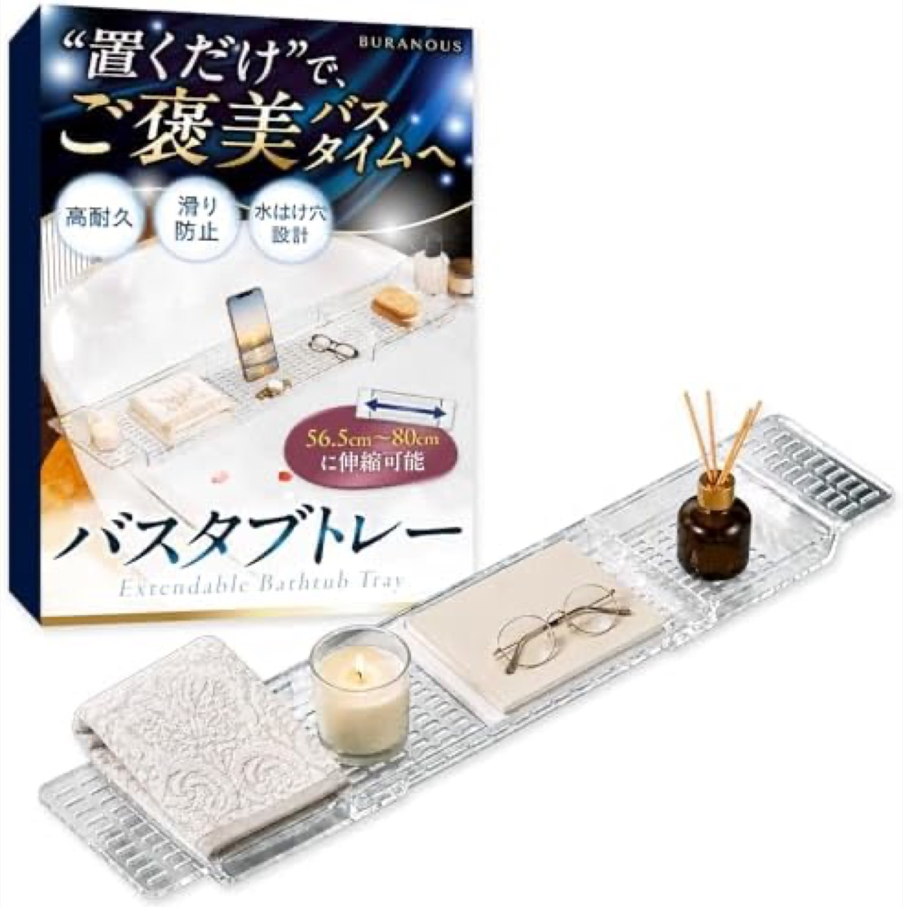
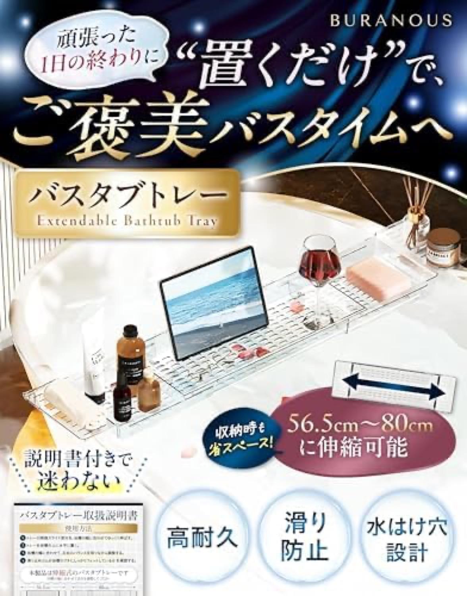
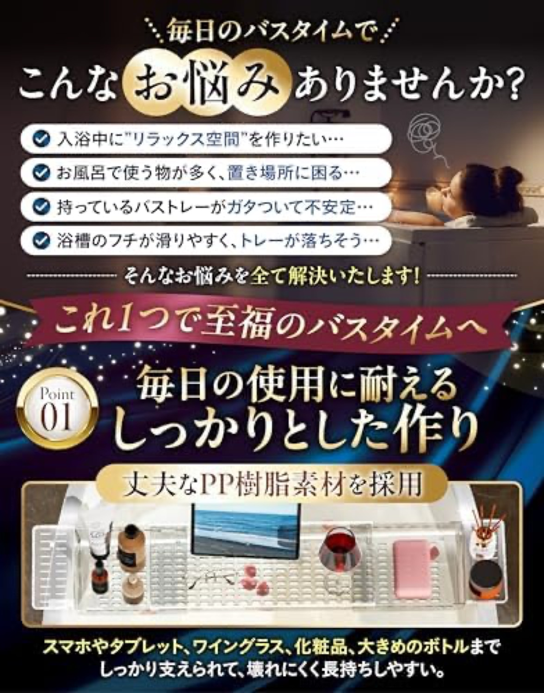
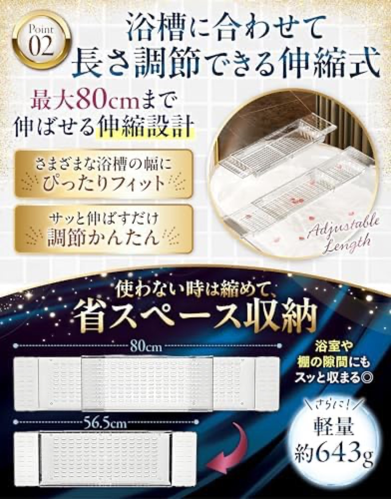
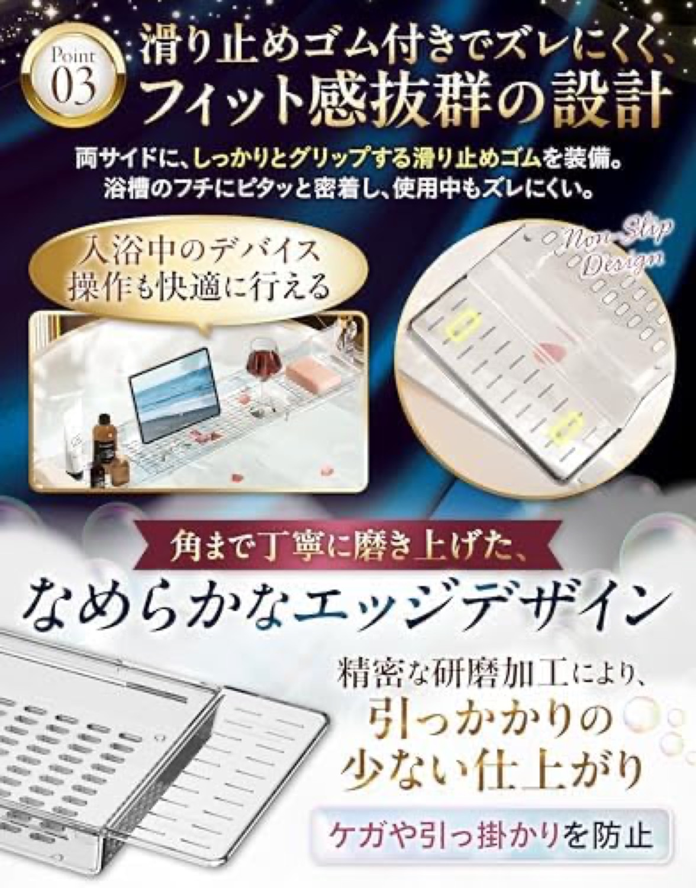
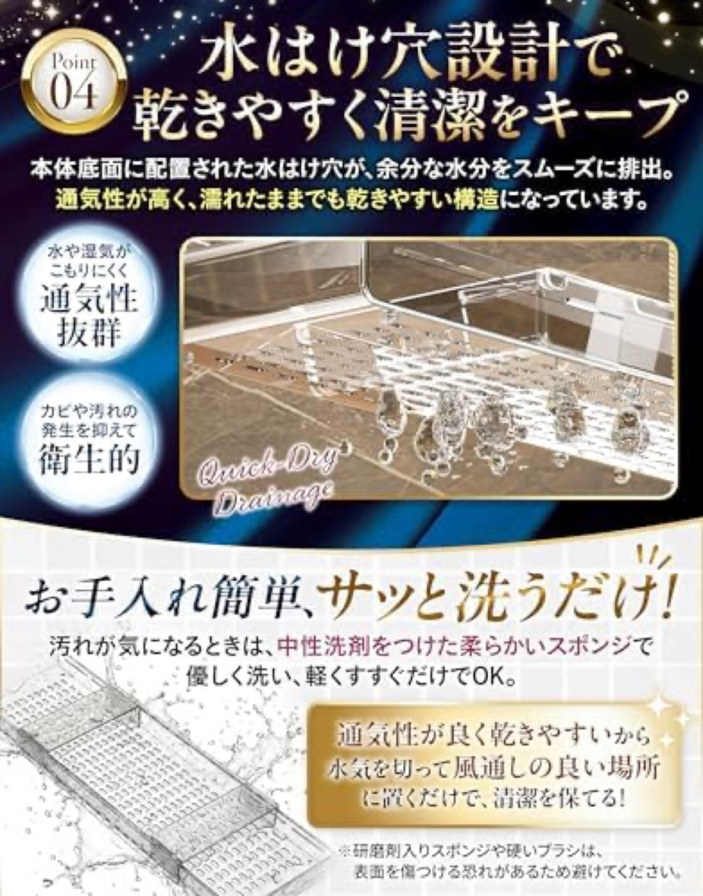

A new entrant (35 reviews, ~3 months old) that bought its way to #2 best-seller: a 32%-off launch price, heavy Sponsored ads, a premium-gift "贅沢バスタイム" creative, and a Brand Store from day one. The clearest template for our own launch.新規参入（35レビュー、約3ヶ月）が販売#2を買い取った：−32%の立ち上げ価格、大量Sponsored広告、高級ギフト風「贅沢バスタイム」訴求、初日からBrand Store。我々の立ち上げの最良の教科書。






Verdict: strong creative, thin substance. A polished infographic main image with gift framing, six images, and a Brand Store on a 3-month-old SKU. No video; the trust base is only 35 reviews and a resin build.評価：訴求は強い、中身は薄い。洗練されたインフォ主画像とギフト訴求、画像6、3ヶ月のSKUにBrand Store。動画なし、信頼基盤はレビュー35件と樹脂のみ。
Only 35 reviews and a commodity resin material. Strong marketing rides a thin trust base, so it is vulnerable to a genuinely premium product running the same playbook.レビュー35件とコモディティ樹脂。強い販促が薄い信頼に乗るため、同じ教科書を回す本物のプレミアム品に弱い。
Blanket Sponsored Products plus a "Social media picks" placement and a -32% launch price drove #2 best-seller and 300+/mo in ~3 months.面を覆うSponsored Products＋「Social media picks」枠＋−32%の立上げ価格で、約3ヶ月で販売#2・月300+。
Discount + Sponsored ads + Brand Store + a strong infographic main image, all from day one. It manufactured velocity rather than earning it slowly.割引＋Sponsored＋Brand Store＋強いインフォ主画像を初日から。速度を「稼ぐ」のではなく「作った」。
Reached #2 best-seller and 300+/month on only 35 reviews in about three months. The 90d and 180d drops are equal (70), confirming a ~3-month-old SKU.レビュー35件で約3ヶ月で販売#2・月300+。90日と180日のdropsが同じ（70）＝発売から約3ヶ月。
Source: Keepa PRO, 2026-06-18.出典：Keepa PRO 2026-06-18。
~13% in 1-3★, no 1★ · but on a tiny base of 35. The rating is not yet stress-tested.1〜3★は約13%、1★なし。ただ35件の小さな母数。評価はまだ未検証。
35 reviews is too few to reveal the long-term resin pains (flex, cracking, cheap feel) documented elsewhere in the category. The strong early rating is partly a function of the discount and gift framing, not yet proven durability.35件は、カテゴリで記録された樹脂の長期不満（たわみ・割れ・安っぽさ）を露わにするには少なすぎる。高い初期評価は割引とギフト訴求の効果でもあり、耐久性の証明ではない。